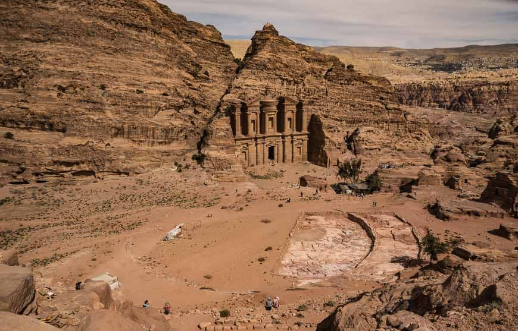
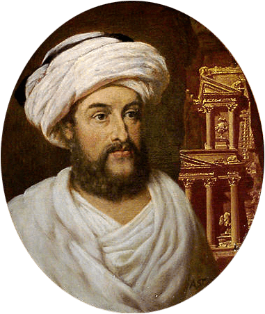
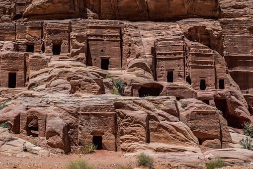

Histoire
Antiquité
Aux alentours de 1200 avant JC les Édomites furent les premiers à occuper l’emplacement actuel de la cité de Pétra. Originaire du royaume d’Édom (sud de l’actuelle Jordanie) ces tribus nomades étaient réputés pour leurs textiles, leurs céramiques et leur travail des métaux. Parmi leur héritage sur place, on retrouve les traces d’une série de fortins au dessus de promontoires visant à les protéger d’éventuelles attaques.
La fin de l’occupation Édomite vers le VIe siècle avant JC se mêle avec le début de l’occupation nabatéenne qui fit prospérer la cité en en faisant un carrefour du commerce oriental notamment grâce aux caravanes de chameaux. Les Nabatéens étaient à l’origine un peuple de nomades connus pour leur commerce des aromates.
C’est durant l’occupation nabatéenne (VIe avant J.-C. jusqu’au Ie siècle après J.-C.) qu’apparaissent les principaux monuments comme Al Kazneh. Il s’agit principalement de tombeaux royaux.
La cité attire alors l’attention de nombreux rois locaux et les nabatéens devrons repousser des nombreuses incursions ennemies. C’est à ce moment qu’est construit le Temple de Deir, en l’honneur du roi Obodas 1er après de nombreuses victoires militaires. Après à la mort du dernier roi Nabatéen Rabbel II, la cité tombe aux mains des romains.
En 363 lors de sa période byzantine, la cité est frappée d’un violent séisme détruisant de nombreux bâtiments comme les aqueducs et le théâtre. La ville affaiblie depuis l’occupation romaine ne fut pas reconstruite et perdra petit à petit ses habitants.
Moyen-Âge

Au Moyen Age, la cité se dépeuple et en l'an 700 il ne s’agit plus que d’un petit village, ignoré, même par l’expansion de l’Islam.
La cité tombe peu à peu dans l’oubli.
Recherches Archéologiques

La cité nabatéenne fut redécouverte par le monde occidental en 1812 grâce à l’explorateur suisse Jean-Louis Burckhardt. Malheureusement la situation géopolitique d’alors ne lui permit pas d’étudier les vestiges de la cité oubliée en détail et dû se contenter de la traverser sans même pouvoir prendre de notes. Cependant il fit part de sa découverte aux occidentaux installés en Syrie et en Égypte. Il fallut attendre 6 ans pour qu’une véritable expédition ait lieu, menée par William John Bankes, un égyptologue anglais. Avec son équipe pue rester quelques jours et faire des croquis des lieux. Par la suite Pétra fit l’objet de nombreuses expéditions et recherches archéologiques.
Architecture
Les premières constructions des Nabatéens étaient simplement creusées dans la roche de manière assez rustique. Progressivement, les habitants s’inspirèrent des styles architecturaux des civilisations voisines afin de créer des façades plus complexe. On peut aussi retrouver des traces de l’architecture hellénistiques dans l’aspect des bâtiments public que ce soit les colonnes ou encore le péristyle. Les lieux de vie et de travail des habitants sont quand à eux d’avantage d’inspiration arabe.

Petra dans l'art et la culture
Depuis sa redécouverte, Pétra subjugue et inspire. C’est ainsi que virent le jours de nombres œuvres . Plusieurs peintre en firent des représentations.
La cité nabatéenne fit aussi quelques apparitions sur grand écran que ce soit dans Indiana Jones et la dernière croisade, Transformers 2, Le Retour de la Momie ou encore Mortal Kombat : Destruction Finale. Le jeu vidéo Overwatch lui fit aussi hommage en recréant la cité dans un monde futuriste.